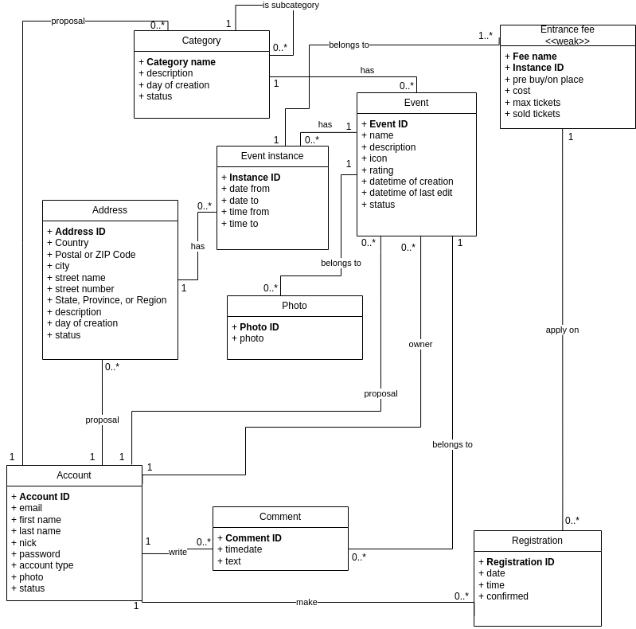

Actions and events (Akce a události)
- Authors
- Michal Ľaš
xlasmi00@stud.fit.vutbr.cz -
Database design, user interface design, user interface implementation (front-end implementation)
- Adam Lazík
xlazik00@stud.fit.vutbr.cz -
SQL script, php form-handling scripts
- Filip Kurčák
xkurca01@stud.fit.vutbr.cz -
Back-end: request validation + authorization, login/logout (sessions)
- Application URL
- http://www.stud.fit.vutbr.cz/~xlazik00/IIS/
User accounts for testing
| Login | Password | Role |
|---|
| eva.hodkova@email.cz | password | Administrator |
| ondrej.nemec@email.cz | password | Moderator |
| jan.novak@email.cz | password | Regular |
Video
Link to commented video
Implementation
Stručná dokumentace k implementaci, která popisuje, které části projektu (např. PHP skripty) implementují jednotlivé případy použití.
...
- ./*.php: in the root directory are individual web pages. The corresponding styles for these pages are located within the ./styles directory,
while the associated JavaScript scripts are stored in the ./scripts directory. Each page has its own functions (backend logic) located in ./scripts directory.
- index.php: the main page with event searching
- login.php: page with login
- signup.php: page with new user registration
- profile.php: page with the profile of the logged-in user
- event-detail.php: page with a detailed description of an event
- event-edit.php: page for editing an existing event
- event-create.php: page for creating a new event
- account-manage.php: page for managing user accounts
- category-manage.php: page for managing event categories
- location-manage.php: page for managing locations
- ticket-manage.php: page for managing purchased tickets
- event-manage.php: page for managing created events
- ./common/html-components.php: functions for generating common html components
- ./common/db_handler.php: functions for connecting to our database, fetching and validating data, performing CRUD operations, and utility functions for user sessions and responses
- ./common/input_validator.php: provides functions for validating user input
- ./db: file .htaccess specifies the order in which Deny and Allow directives are evaluated + blocks all users from accessing the directory. File db.sql defines the database schema for our event management system
- ./doc: documentation
- ./js: functions for UI interactions and validations
- ./styles: CSS files, each dedicated to styling different components and pages of our web application
Database

Instalation
- Installation steps
- Place root directory of this project into your WWWW directory
- Create directory event-images with 777 permissions
- Input your SQL credentials in the connect_to_db() function in common/db_handler.php
- Software requirements
- PHP 8.1.19
- MySQL 14.14 Distrib 5.7.44
- Database initialization
- Login into MySQL
- CREATE DATABASE DatabaseName CHARACTER SET utf8mb4 COLLATE utf8mb4_general_ci;
- USE DatabaseName;
- source path/to/db/db.sql
Known problems
Due to time constraints, editing of Events is not supported, also passwords are currently not being hashed. Also we forgot to validate whether time_from precedes time_to in Event_Instances (allowing us to insert invalid time intervals).